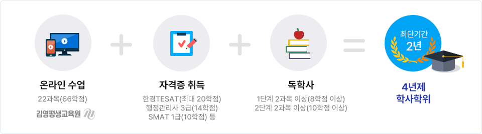
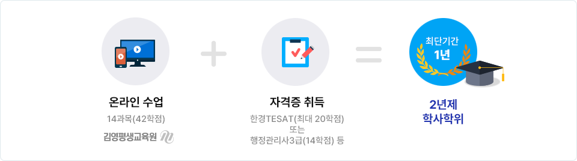
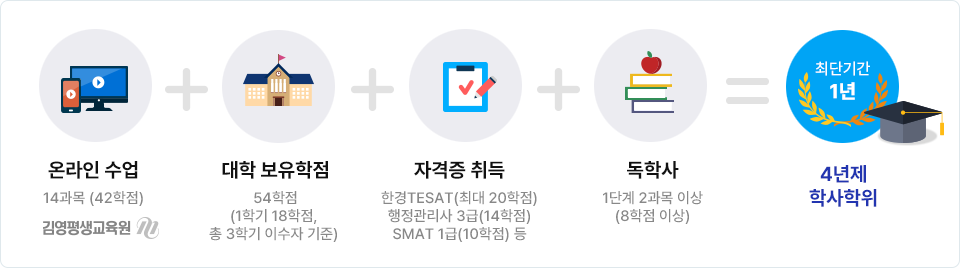
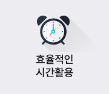
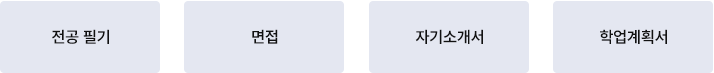
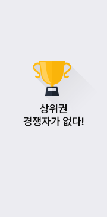
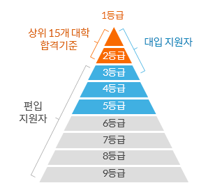

대상별 가이드
고등학교 졸업자가 전문학사 학위를 취득하기 위해서는 전공 45학점 이상, 교양 15학점 이상, 총 80학점 이상을 취득하여야 합니다. 고등학교 졸업자가 학사 학위를 취득하기 위해서는 전공 60학점 이상, 교양 30학점 이상, 총 140학점 이상을 취득하여야 합니다.
4년제 경영전공 학사 학위
전공 60학점 + 교양 30학점 + 일반 50학점 = 총 140학점 이수

2년제 경영전공 전문학사 학위
전공 45학점 + 교양 15학점 + 일반 20학점 = 총 80학점 이수

- 이미 취득한 전문(학사)학위를 통해 자격이 인정되며, 이 경우 전공학점(전필 포함)36학점만 이수하여 타 전공의 전문학사 학위를 수여 받을 수 있습니다. 전문대 졸업자가 학사 학위 취득을 희망하는 경우 이미 보유하고 있는 전문대 졸업 80학점과 자격증 시험 합격을 통해 학점을 인정받고, 두 학기 동안 평가인정과목을 36학점(12과목)을 수강함과 동시에, 학점인정 자격증을 도전하여 총 142학점으로 학사학위 취득이 가능합니다.
- 4년제 대학을 졸업하였으나 취득한 학위를 이용해 또 다른 전공을 취득하고 싶은 학습자, 본인이 희망하는 제 2의 전공에 대해 학점은행의 제도를 이용하면 손쉽게 학위를 취득할 수 있습니다. 이미 취득한 학사학위를 통해 자격이 인정되며, 전공학점(전필 포함) 48학점만 이수하여 타 전공의 학사학위를 수여 받으실 수 있습니다. 필요한 요건은 평가인정과목 이수와 전공자격증 취득을 통해 충족하실 수 있습니다(타전공 전문학사 조건은 전문대 졸업자와 동일합니다).
- 2002년 3월부터 학점은행제에 의한 학위취득을 위해서는 평가 인정 받은 학습과목이나 시간제 등록 에 의한 학점을 교양/전공 구분없이 18학점이상 반드시 취득 해야 합니다. 이는 학점 인정대상 학교 중퇴자나 독학사 시험 면제자 과정 이수자, 국가기술자격증 소지자 등의 학점이 아무리 전문학사 80 학점(3년제 120학점),학사 140학점의 기준을 충족 한다 할지라도 평가인정 학습과목이나 시간제 등록에 의한 18학점 이상의 학점 취득이 없을 시 학위 취득이 불가능 해짐을 의미합니다.
전문대(2년제) 졸업자 4년제 경영전공 학사 학위
전공 60학점 교양 30학점 일반 50학점 = 총 140학점 이수
전문대(3년제) 졸업자 4년제 학사 학위
전공 60학점 교양 30학점 일반 50학점 = 총 140학점 이수
일반대(4년제) 졸업자 4년제 경영전공 학사 학위
전공필수 48 학점(이전 대학 학위취득으로 경영 전공 과목만 수강, 전필 포함)
- 대학 재학중일 경우 대학에서 수강 중인 학점과 관계없이 수강이 가능하며 1학기 최대 24학점, 1년 최대 42학점을 수강하실 수 있습니다. 재학 중에 학점은행제를 통해 이수한 학점은 해당 대학 또는 전문대학 졸업학점에 포함될 수 없으므로, 재학 중에 학점은행제를 통해 학점을 이수하여도 해당 학교를 조기졸업 할 수 없습니다.
- 재학생의 경우 반드시 자퇴를 해야만 학점은행제를 통한 학위취득이 가능합니다.
- 또한 대학 재학 중에 타 학점원(평가인정학습과목, 시간제등록 등)으로 취득한 학점은 학점은행제 학점으로 인정 가능하나, 추후 대학 제적 혹은 졸업하여 학점인정신청시, 대학에서 이수한 학점과 타 학점원을 합하여 연간 42학점(학기당 24학점) 범위 내에서 학점인정 가능함을 유의하시기 바랍니다.
대학교 재학 및 자퇴생 4년제 경영전공 학사 학위
전공 60학점 교양 30학점 일반 50학점 = 총 140학점 이수

편입이란?
- - 대학 2학년 이상 수료 및 졸업의 자격 조건을 갖춘수험생이 4년제 대학의 3학년으로 진학하는 것입니다.
- - 1학년으로 입학하는 신입학에 비해 편입을 3학년부터시작하여 평균 4학기 과정을 이수하면 졸업이 가능합니다.
- - 대부분의 대학이 편입학 전형 시 학과 제한을 두지 않아 다양한 전공으로 편입이 가능합니다.
편입학 전형 유형과 지원 자격
- - 편입학은 수험생의 지원자격에 따라 크게 3가지 전형으로 나눌 수 있습니다.
- - 지원자격 부분은 가장 기본이 되는 요소이므로 꼼꼼히 확인해야 하며 본인에게 맞는 전형을 선택해야 합니다.
편입학 전형 유형
| 구분 | 지원 자격 | 선발인원 측정 기준 |
|---|---|---|
| 일반편입 |
전문대 졸업(예정) 또는 4년제 대학 2학년 수료(예정) 대학별 지원자격 요소 충족자 (이수학점, 성적, 어학성적, 전공제한 등) *상기 학력 조건과 동일한 학점은행제 학위 포함 |
학과별 결원(제적, 자퇴 등)을 대학별 4대지표의 산정비율에 따라 모집인원 선발 |
| 학사편입 |
학사 학위 소지(예정)자 대학별 지원자격 요소 충족자 (성적, 어학성적, 전공제한 등) |
입학정원의 2% 이내, 학과정원의 4% 이내 선발 |
| 특별전형 |
각 전형별 지원자격 요소 충족자 (대입 특별전형과 유사) |
정원 외 선발로 해마다 다르며 일부 모집단위에서만 선발 |
대학별 지원 자격 요소
대학/학과에 따라 추가적으로 요구하는 자격요건이 있습니다. 이는 대학/학과별로 상이하므로 반드시 모집요강의 자격요건 부분을 확인해야 합니다.| 이수학점 | 성적 | 어학성적 | 전공제한 |
|---|---|---|---|
|
2학년 수료와 함께 추가로 요구하는 요소 대학/모집단위 별로 기준이 상이함 |
일정 점수 이상의 성적을 요구하는 것 일부 대학/모집단위에 한해서 적용 |
공인어학시험의 일정 수준 이상 취득한 자에 한해 지원 자격을 부여하는 것 |
동일계열에 한해 지원이 가능하거나, 동일계열은 지원이 불가한 것 |
-

재수/반수를 선택하여 대입 전형에 응시하면 만족할 수 있는 대학에 합격을 하더라도 다시 1학년으로 입학을 해야 합니다. 이 경우 1년 이상의 공백이 생겨서 졸업 후 취업 등 장기적인 진로를 계획할 때 시간적 손실이 매우 크게 느껴집니다.
편입은 합격 후 바로 대학 3학년으로 진학하게 된다는 장점이 있습니다. 이처럼 절약하게 되는 시간을 대학생활 및 졸업 후 진로를 계획할 시 다른 요소에 투자할 수 있습니다.
-
편입은 상위권 대학으로의 진학뿐 아니라 원하는 학과로 진학하여 진로를 다시 개발할 수 있다는 장점이 있습니다.
출신 계열과 다른 계열 및 학과로 지원하는데 제한이나 불리함이 없으며, 대학과 학과별 전형에만 준비할 수 있다면 본인이 원하는 진로를 위해 학과 선택이 자유롭다는 큰 장점을 갖는 것이 편입입니다.
-
필답고사 공통, 편입영어와 편입수학
편입학 전형에서 필답고사를 진행하는 대학의 80%는 영어와 수학시험을 통해 편입생을 선발하고 있습니다. 편입영어와 편입수학은 편입학의 가장 기본적인 전형요소로 편입학을 준비하는 수험생에게는 편입 준비의 시작점입니다.
편입영어, 편입수학 비교 편입영어 편입영어는 문법, 어휘, 독해, 논리 4가지 영역에서 출제
학습시간 대비 효율을 항상 고려하여 학습
기본 이론부터 차근차근 학습하여 문제풀이를 통해 실전을 대비편입수학 기초수학을 기반으로 대학수학을 학습
1~2학년 수준의 미적분, 선형대수, 공학수학 기반으로 출제
기본 개념부터 충실히 학습하여 기출문제 등을 풀어보며 실전 대비그 외 전형방법

-

편입의 경쟁구도는 신입학 전형과 크게 다릅니다. 상위권 수험생들이 신입학 전형으로 대부분 수도권 대학에 진학을 했기 때문에 편입학 전형은 상위권 수험생들을 제외한 새로운 경쟁입니다.
편입영어 및 편입수학에 집중을 하게 되면 성공 확률이 매우 높습니다.